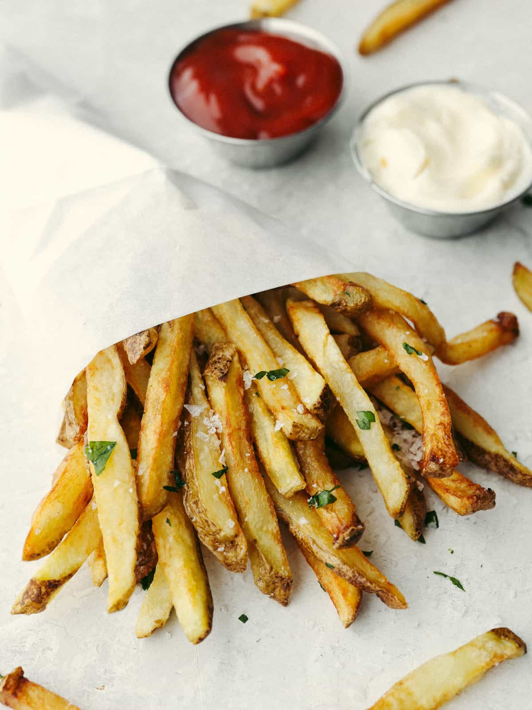

Frites

Description
These are just fancy fries, ready for the average downtown bistro to mark
up by at least 200%. The kind mentioned here are lightly double fried for fluffiness.
Ingredients
- Potatoes (Preferably russet)
- Salt (to taste)
- Oil for deep frying
- Any powdered seasoning you like
Steps
- Slice potatoes into batons
- Preheat oil to 350F
- Fry the batons until blond before removal
- Freeze for storage or otherwise cool the fries
- Fry the fries until golden brown and season while hot when the time comes to serve